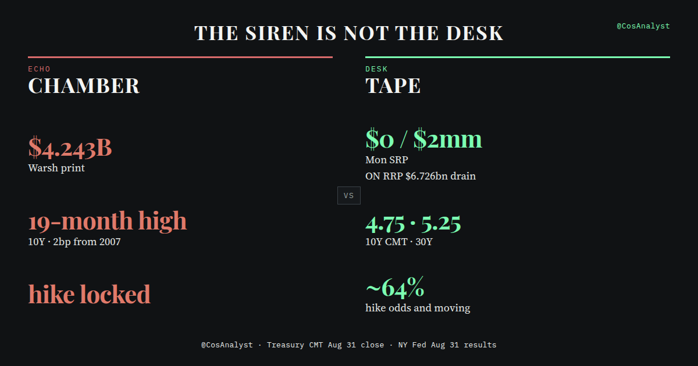
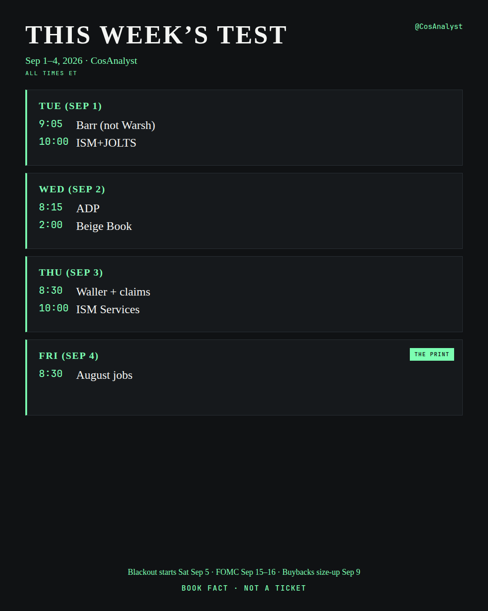

Desk tape · Aug 31 close
The $4.243 Billion Print Was $0. The 10Y Is 4.75 — Tied, Not a New High.
 CosAnalyst
research desk
CosAnalyst
research desk
QQQ cash close 716.76 (+0.05%), day range 713.16–717.58. After-hours 716.84–716.94. Final GEX snapshot 4:01:20 PM ET (Data Refresh Paused): spot 716.68, net GEX +68.20M, HVL 716, C1 717. The midday −$222M card expired. It is not the cash close. Tuesday is Barr, JOLTS, and ISM — not Warsh. Friday is NFP. Hidden risk is duration, $WTI, and jobs. Not a secret injection.
A CosAnalyst Research Project. SIMULATED RESEARCH / BOOK FACT • NOT A TICKET. Publisher + AI-assisted. Not advice.
1. Where we are
QQQ cash close · Aug 31
- Cash close
- 716.76 (+0.05%)
- Day range
- 713.16–717.58
- AH
- 716.84–716.94
- Midday −$222M card
- Expired · not the close
GEX snapshot · 4:01:20 PM ET · Data Refresh Paused
- Spot
- 716.68
- Net GEX
- +68.20M
- HVL
- 716
- C1
- 717
US cash is closed. After-hours is open. QQQ cash close 716.76 (+0.05%). Day range 713.16–717.58. AH 716.84–716.94. Final GEX snapshot, 4:01:20 PM ET, Data Refresh Paused: spot 716.68, net GEX +68.20M, HVL 716, C1 717. The midday −$222M card expired. Do not read it as the cash close.
Monday tape · verified AH
- NQ1!
- 29,509 (+0.06%)
- ES
- 7,701 (−0.27%)
- $WTI
- 86.17 (+3.26%)
- XLE
- 63.96
- VIX
- Delayed 14.90
- VX Oct
- Delayed 18.445
NQ1! 29,509 (+0.06%) vs ES 7,701 (−0.27%). $WTI 86.17 (+3.26%). XLE 63.96. VIX delayed 14.90. VX Oct delayed 18.445. Oil is $WTI, never $CL.
Official CMT close · Aug 31 · TV after the close
- CMT 2Y
- 4.34
- CMT 10Y
- 4.75 · tied Jul 31
- US10Y TV
- 4.756–4.758
- TV month high
- 4.768 · not a CMT high
- CMT 30Y
- 5.25
- US30Y
- 5.252%
- 2s10s
- 41 bp
- Japan 10Y (Tokyo)
- 2.950%
Official CMT close, Aug 31: 2Y 4.34 · 10Y 4.75 · 30Y 5.25. 2s10s 41 bp. Japan 10Y 2.950% (Tokyo). US10Y TV 4.756–4.758, month high 4.768. Official CMT 10Y 4.75 still ties Jul 31 — not a new CMT high. US30Y 5.252%.
A morning note said August is closing with the lowest August high since 2018, then waved at October 2016. Vol-regime teaching, not a Cos-verified monthly-high series. Intraday Aug 5 still tagged 18.43. Calm is a regime, not a forecast. Friday NFP plus $WTI is the vol event.
2. The echo chamber vs the desk

Sunday a post claimed the Fed would inject $4,243,000,000 at 9:00 a.m. ET, that Warsh had ordered printing to stop a crash. “Tomorrow” from Sunday was Monday. Monday printed.
Standing Repo is a ceiling. ON RRP is a floor. Not QE. Nine a.m. is ordinary morning settlement.
Monday NY Fed
- Morning SRP
- $0
- ON RRP
- $6.726 billion — a drain
- Afternoon SRP
- $2 million
- $4.243 billion operation
- None
- Aug 14–Sep 14
- ~$17bn reinvestment · zero RMP
Monday NY Fed: morning SRP $0. ON RRP $6.726 billion — a drain. Afternoon SRP $2 million. No $4.243 billion operation. Aug 14–Sep 14 is ~$17bn reinvestment and zero reserve-management purchases.
3. The Treasury story
Kobeissi said 12 days after intervention, 10Y is a new 19-month high, 2 bp from 2007, cannot afford 5%+.
Treasury sb0607 (Aug 19) was a buyback size hike: $2bn → at least $4bn, 10s–30s, effective Sep 9. Not QE. Not a yield cap. Link https://home.treasury.gov/news/press-releases/sb0607
Official CMT · not a new high
- CMT 10Y
- 4.75
- vs Jul 31
- Tied
- US10Y TV
- 4.756–4.758
- TV month high
- 4.768 · not a CMT high
- vs Jan 13, 2025 4.79
- 4 bp below
- vs 5%
- 25 bp below
- “Since 2007” print
- 30Y 5.31 on Aug 17
- CMT 30Y
- 5.25 · 6 bp under Aug 17 5.31
- US30Y
- 5.252%
On official CMT: 10Y 4.75 ties Jul 31, 4 bp below Jan 13, 2025 4.79. Neighborhood, not a new high. 4.75 is 25 bp below 5%. US10Y TV 4.756–4.758, month high 4.768 — a TV print, not a new CMT high. The “since 2007” print is the 30Y: 5.31 on Aug 17. Official CMT 30Y 5.25 is 6 bp under that. US30Y 5.252%. Jobs Friday is the duration event. New-size buybacks start Wed Sep 9.
4. No Warsh Tuesday
Tue 9:05 ET: Gov. Barr, inclusion venue, not Warsh. Wed 2:00: Beige Book. Thu 8:30: Waller. Blackout Sat Sep 5. FOMC Sep 15–16. Warsh at JH: “a discipline, not a decision.”
5. This week’s test
- Tue 10:00 — JOLTS + ISM mfg
- Wed 8:15 ADP · 10:30 EIA ($WTI) · 2:00 Beige Book
- Thu 8:30 claims + Waller · 10:00 ISM Services
- Fri 8:30 August jobs — the print
Labor Day is next week. PPI/CPI next week, in blackout, still before FOMC.

6. Japan 10Y is real. BoJ 91% is a wager.
Tokyo 10Y 2.950%, highest since Sep 1996. JGB auction Tuesday is Japan’s test. CME hike odds ~64% at 3:45 PM ET — a moving number, not a lock. FedWatch was not pulled.
7. How to read the week
Do not wait for Warsh on TV. Do not treat 64% as a decision. Do not invent FedWatch — it was not pulled. Do not treat 4.75 as a new 19-month CMT high. Do not treat the midday −$222M card as the cash close. Do not treat $6.726bn of ON RRP as an injection. Do not treat a 2016 VIX analog as a roadmap.
Hidden risk = duration + $WTI + jobs. Not a secret print.
Book fact · not a ticket.
This note is simulated research from a publisher and an AI-assisted research desk. It is not advice and not a ticket. Oil is $WTI. We do not invent a print, a CMT high, or a hike lock.